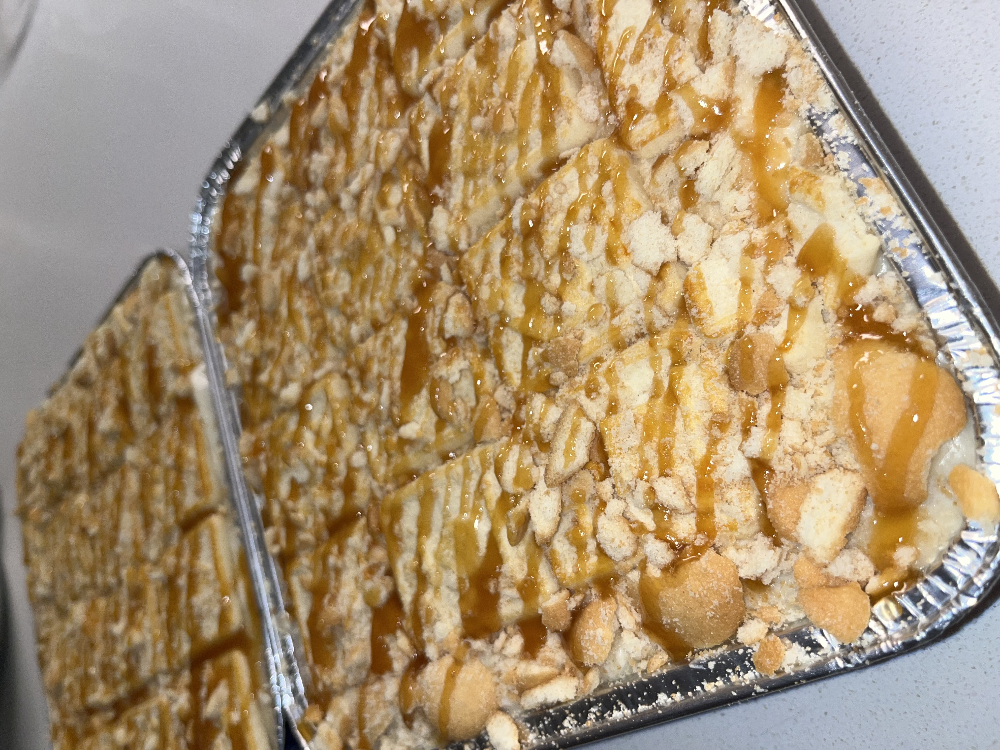
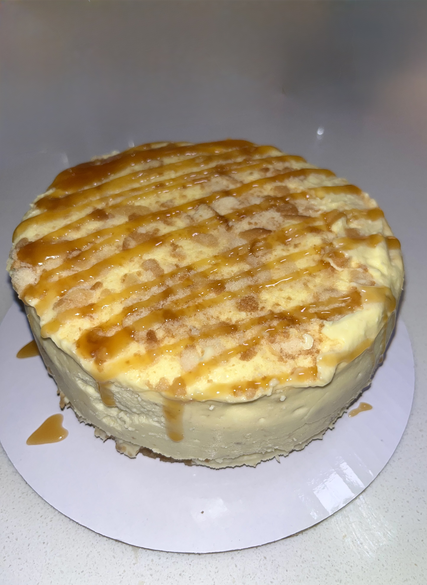

✨ Baked with Grace • Served with Love • Freshly Baked to Order • Grace & Batter • Broward County, FL • Handmade Desserts •
✨ Baked with Grace • Served with Love • Freshly Baked to Order • Grace & Batter • Broward County, FL • Handmade Desserts •
Featured Dessert
Rich, creamy cheesecake layered with smooth Lotus Biscoff cookie butter and finished with a buttery Biscoff cookie crumble. Handmade from scratch and baked with grace for every order.
View Menu

Moist strawberry cake topped with cream cheese frosting, fresh strawberries, and strawberry crunch crumbles.

Layers of creamy banana pudding, vanilla wafers, and sweet toppings made with love.

Our signature vanilla cookie loaded with Oreo pieces and white chocolate.
Grace and Batter was founded with a simple mission: to create desserts that bring joy while glorifying God. What began as a passion for baking has grown into a faith-inspired bakery dedicated to handcrafted treats made with excellence, creativity, and love. From cookies and cakes to banana pudding and seasonal favorites, every dessert is baked with grace and served with love.
Crafted with love.
Every dessert tells a story. Browse a few of our handcrafted treats and custom creations.



Whether you're celebrating a birthday, hosting an event, or simply craving something sweet, Grace and Batter is here to make your day sweeter.
Place Your Order